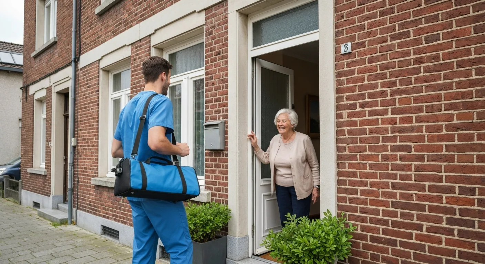

U staat op uit uw stoel, draait u om in bed of stapt uit de auto, en plots schiet er een pijn door uw onderrug, net naast het staartbeen. Niet in het midden van de rug, maar duidelijk aan één kant. Grote kans dat uw SI-gewricht (sacro-iliacaal gewricht) geprikkeld is. Het wordt vaak over het hoofd gezien, terwijl naar schatting een op de vijf mensen met lage rugpijn hier de bron van hun klachten heeft. Het goede nieuws: SI-gewricht pijn reageert doorgaans goed op gerichte oefeningen en kinesitherapie. In dit artikel leest u hoe u de klachten herkent, wat u zelf thuis kunt doen en wanneer begeleiding zinvol is.
Kort samengevat
SI-gewrichtpijn zit laag, aan één kant en ter hoogte van de bil. Rust helpt maar kort; gedoseerd bewegen en versterken van de spieren rond het bekken is de sleutel tot herstel.
Wat Is het SI-Gewricht?
Uw bekken bestaat uit twee bekkenhelften die achteraan verbonden zijn met het heiligbeen (sacrum), de driehoekige botplaat onderaan de wervelkolom. Die verbinding, links en rechts, heet het sacro-iliacale of kortweg SI-gewricht. U voelt de plek zelf: de twee kuiltjes laag in de rug, net boven de bilnaad.
Het SI-gewricht beweegt maar enkele millimeters. Zijn taak is vooral schokdemping en krachtoverdracht: het gewicht van uw romp wordt er via het bekken naar de benen geleid. Het gewricht wordt stevig bijeengehouden door sterke banden en door spieren zoals de bilspieren, de diepe buikspieren en de rugspieren. Werken die spieren onvoldoende samen, of staat er te veel of te ongelijke druk op het gewricht, dan kan het geprikkeld raken.
Hoe Herkent U SI-Gewricht Pijn?
De klachten lijken op gewone lage rugpijn of op ischias, en worden er ook vaak mee verward. Typisch voor het SI-gewricht zijn:
- Pijn aan één kant, laag in de rug, die u vaak met één vinger kunt aanwijzen op het kuiltje boven de bil
- Uitstraling naar de bil, de lies of de achterkant van het bovenbeen, maar zelden tot onder de knie
- Meer pijn bij asymmetrische bewegingen: trappen lopen, op één been staan om een broek aan te trekken, een grote stap zetten
- Pijn bij omdraaien in bed of bij in en uit de auto stappen
- Moeite met lang zitten, vooral op de pijnlijke kant, of met lang stilstaan
Straalt de pijn wél door tot in het onderbeen of de voet, met tintelingen of een doof gevoel, dan is een geprikkelde zenuwwortel waarschijnlijker. Lees daarover meer in ons artikel over ischias en uitstralende beenpijn. Ligt de pijn eerder aan de buitenkant van de heup, dan kan een slijmbeursontsteking van de heup de oorzaak zijn.
Oorzaken en Risicofactoren
- Zwangerschap en de periode erna. Hormonen maken de banden soepeler, het gewicht verschuift en de druk op het bekken neemt toe. Bekkenklachten tijdens of na een zwangerschap hebben vaak een SI-component.
- Een val op het zitvlak of een verkeersongeval, waarbij één bekkenhelft een schok opvangt.
- Ongelijke belasting, bijvoorbeeld door mank lopen na een knie- of heupoperatie, een beenlengteverschil of veel tillen met een draai.
- Artrose of ontstekingsreuma, zoals de ziekte van Bechterew, die het SI-gewricht rechtstreeks aantast.
- Zwakke rompspieren en bilspieren, vaak in combinatie met veel zitten.
- Na een operatie aan de lage rug, waarbij de belasting in de onderrug verschuift.

Wat U Zelf Kunt Doen in de Acute Fase
Is de pijn net begonnen en fel, dan staat het kalmeren van het gewricht voorop. Volledige bedrust is niet nodig en werkt zelfs vertragend. Wel helpt het om een paar dagen de bewegingen te vermijden die de pijn uitlokken.
- Maak kleine, symmetrische stappen. Vermijd grote passen en draaibewegingen.
- Knieën samen bij het omdraaien in bed. Span licht uw buik op en draai als één blok. Een kussen tussen de knieën in zijlig ontlast het bekken 's nachts.
- Knieën samen bij in- en uitstappen van de auto. Ga eerst zijwaarts zitten en draai dan beide benen tegelijk naar binnen.
- Neem de trap tree voor tree, met het minst pijnlijke been eerst naar boven.
- Wissel zitten en bewegen af. Sta elke 30 minuten even recht en loop een paar passen.
- Warmte op de onderrug voelt voor veel mensen aangenaam en ontspant de spieren rond het gewricht.
Zeven Oefeningen voor Thuis
Deze oefeningen zijn bedoeld om het bekken te mobiliseren en de stabiliserende spieren te versterken. Voer ze uit zonder scherpe pijn: een licht spanningsgevoel mag, pijn die toeneemt niet. Begin met 1 reeks van 8 à 10 herhalingen en bouw op naar 2 à 3 reeksen, dagelijks.
- Bekkenkantelen in ruglig. Lig op de rug met gebogen knieën. Duw uw onderrug zacht plat tegen de ondergrond en laat weer los. Een rustige, kleine beweging die het gewricht soepel houdt.
- Kussen samenknijpen. In dezelfde houding legt u een kussen of opgerolde handdoek tussen uw knieën. Knijp 5 seconden samen en ontspan. Deze oefening activeert de binnenkant van de dijen en geeft veel mensen meteen wat verlichting.
- Buikspieren aanspannen. Lig op de rug, trek uw navel zacht naar binnen alsof u een te strakke broek dichtknoopt, en blijf rustig ademen. Houd 10 seconden vast. Dit traint de diepe buikspier die het bekken als een gordel ondersteunt.
- Het bruggetje. Vanuit ruglig met gebogen knieën spant u uw buik licht aan en heft u uw bekken op tot uw romp en dijen in één lijn liggen. Houd 3 tellen vast en zak rustig terug.
- De clamshell. Lig op uw zij met gebogen knieën en de voeten samen. Open de bovenste knie als een schelp, zonder uw bekken naar achter te laten kantelen, en sluit weer. Versterkt de zijdelingse bilspieren.
- De bird-dog. Op handen en knieën strekt u één arm naar voor en het tegenovergestelde been naar achter, zonder uw rug te laten doorzakken. Houd 3 tellen vast en wissel. Begin eventueel enkel met het been.
- Wandelen. Een dagelijkse wandeling met kleine passen op een vlakke ondergrond is een van de beste oefeningen. Begin met 10 minuten en bouw op.
Voorzichtig met stretchen
Veel mensen gaan bij bekkenpijn instinctief stevig rekken. Is uw SI-gewricht net te beweeglijk, bijvoorbeeld na een zwangerschap, dan kan intensief stretchen de klachten verergeren. Bij zo'n bekkeninstabiliteit ligt de nadruk op stabiliseren, niet op rekken. Uw kinesitherapeut maakt dat onderscheid bij het eerste onderzoek.
Herstel in Vier Fasen
De duur verschilt sterk van persoon tot persoon. Onderstaande opbouw is een richtlijn voor een geprikkeld SI-gewricht zonder onderliggende aandoening.
Zacht mobiliseren
Dagelijks wandelen
Evenwicht op één been
Terugval voorkomen
SI-Gewricht, Lage Rugpijn of Ischias?
Onderstaande vergelijking helpt u de klachten beter te plaatsen. Ze vervangt geen onderzoek: bij twijfel beslist een arts of kinesitherapeut.
| Kenmerk | SI-gewricht | Aspecifieke lage rugpijn | Ischias |
|---|---|---|---|
| Plaats | Eén kant, net naast het staartbeen | Breder, vaak midden in de onderrug | Bil en been |
| Uitstraling | Bil, lies, bovenbeen | Meestal niet | Tot onder de knie, soms in de voet |
| Tintelingen of doof gevoel | Zelden | Zelden | Vaak |
| Typische uitlokkers | Trappen, op één been staan, omdraaien | Lang zitten, voorover buigen | Hoesten, niezen, voorover buigen |
Meer over algemene rugklachten leest u in ons artikel rugpijn behandelen aan huis: wanneer naar de kinesist?
Wat Doet de Kinesitherapeut bij SI-Gewricht Pijn?
Bij het eerste bezoek onderzoekt de kinesitherapeut met enkele eenvoudige provocatietesten of het SI-gewricht werkelijk de bron van de pijn is, en of het gewricht eerder te stijf of te beweeglijk is. Daarop wordt de behandeling afgestemd:
- Manuele technieken om een geblokkeerd of stijf gewricht los te maken en de omliggende spieren te ontspannen
- Stabilisatietraining van de diepe buikspieren, bilspieren en bekkenbodem, afgestemd op uw niveau
- Houdings- en bewegingsadvies voor dagelijkse handelingen zoals opstaan, aankleden en tillen
- Gangcorrectie als mank lopen of een ongelijke belasting de klachten in stand houdt
- Een oefenprogramma voor thuis dat stap voor stap wordt opgebouwd
Bij PhysioVisit gebeurt dit bij u thuis, in de regio Grimbergen, Strombeek-Bever, Humbeek, Beigem en Koningslo. Dat heeft een groot voordeel bij bekkenpijn: u hoeft niet in de auto te stappen of lang in een wachtzaal te zitten, net de houdingen die de pijn vaak aanwakkeren. Bovendien leert u de oefeningen in uw eigen omgeving, met uw eigen bed, trap en stoel. Wilt u weten welke andere situaties zich goed lenen tot behandeling aan huis, lees dan ons artikel over zeven situaties waarin kinesitherapie aan huis nodig is.
Ontstonden de klachten na een knie- of heupoperatie door een tijdlang mank te lopen? Dan werken we ook aan uw looppatroon via gangrevalidatie. Rustig fietsen op een hometrainer (te huur voor €2 per dag) is voor veel mensen met SI-klachten een goede, symmetrische vorm van beweging, zodra de acute fase voorbij is.
Wanneer Naar de Arts?
Raadpleeg snel een arts bij:
- Pijn na een val of ongeval, zeker bij ouderen of bij osteoporose (mogelijke bekkenfractuur)
- Koorts in combinatie met rug- of bekkenpijn
- Nachtelijke pijn die niet verandert met houding, of onverklaard gewichtsverlies
- Ochtendstijfheid die langer dan een half uur duurt en beter wordt door bewegen, zeker onder de 45 jaar (mogelijk ontstekingsreuma)
- Krachtverlies in een been, een doof gevoel in het zadelgebied of problemen met plassen of stoelgang: dan meteen naar de spoed
Heeft u pijn in het bekken na een val, lees dan ook ons artikel over kinesitherapie na een bekkenfractuur.
Veelgestelde Vragen over SI-Gewricht Pijn
Kinesitherapie aan Huis bij Bekkenpijn?
Wij behandelen SI-gewricht- en rugklachten bij u thuis in Grimbergen en omgeving. Huurt u liever materiaal om zelf te oefenen? Wij leveren in heel België.
Conclusie
SI-gewricht pijn is een vaak gemiste oorzaak van lage rugpijn, maar wel een goed behandelbare. Pijn aan één kant, laag in de rug en ter hoogte van de bil, die toeneemt bij trappen lopen of op één been staan, wijst in die richting. Vermijd de eerste dagen de uitlokkende bewegingen, blijf in beweging en start zo snel mogelijk met eenvoudige stabiliserende oefeningen.
Blijven de klachten langer dan enkele weken aanslepen, of wilt u zeker zijn dat u de juiste oefeningen doet? Een kinesitherapeut aan huis onderzoekt uw bekken, stelt een oefenprogramma op maat op en volgt uw vooruitgang op. Neem gerust contact met ons op voor een afspraak.